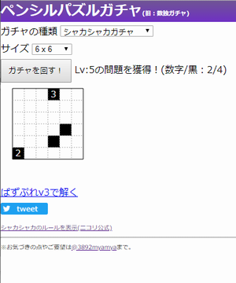

このページについて
みゃーみゃ(@3892myamya)が作ったツールを紹介します。※画像は開発中のものである場合があります。
ツール紹介
・SDVX 課題曲ジェネレータ

「SDVX V スコアツール（β）」のデータをもとに課題曲・武器曲等を表示してくれる非公式ツールです。「SDVX V スコアツール（β）」に登録があればどなたでもご利用いただけます。
・ペンシルパズルガチャ
自動生成されたペンシルパズルの問題がゲットできるガチャです。引いた問題はそのまま「ぱずぷれ v3」さんで解いたり、Twitterでシェアすることが可能です。どんどんガチャを引いてパズルを楽しみましょう！
・ペンシルパズルソルバー
「ぱずぷれ v3」さんや「パズルスクエア」さんで公開されているペンシルパズルを解くことができるかもしれないツールです。数独、ヤジリン、へやわけ等、80種類以上のパズルに対応しています。
・算数練習
小学校低学年～中学年で習う四則演算の練習ができます。問題はランダムで出題され、ハイスコアも記録されるのでゲーム感覚で楽しく計算力を鍛えることができます。
その他
・各ツールのソースコードはgithubにてご覧いただけます。各コードはMITライセンスで再利用可能です。
・各ツールおよび当ページはリンクフリー・アンリンクフリーです。ツールへの直リンクも歓迎いたします。
・各ツールの利用によって生じたいかなる問題についても作者は責任を負わないものとします。また、各ツールについて以下に記載した先以外への問い合わせはご遠慮ください。
・各ツールに関して要望・お気づきの点・取材依頼等がございましたら、みゃーみゃ(@3892myamya)までご連絡ください。
・3892myamya toolsでは今後も皆様に役立つツールを開発していきます。もしツールを便利に感じていただけましたら、欲しいものリストから応援していただけますと大変うれしいです。